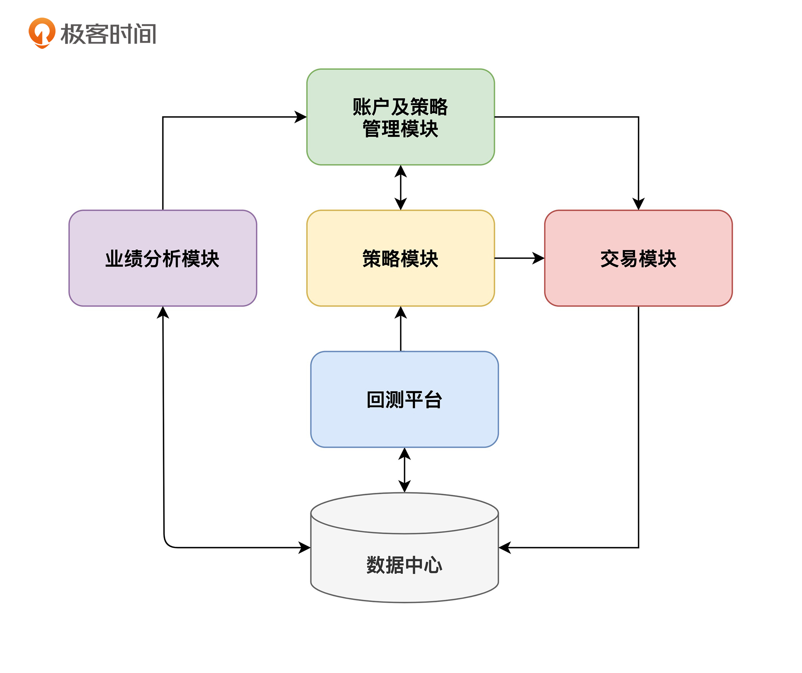
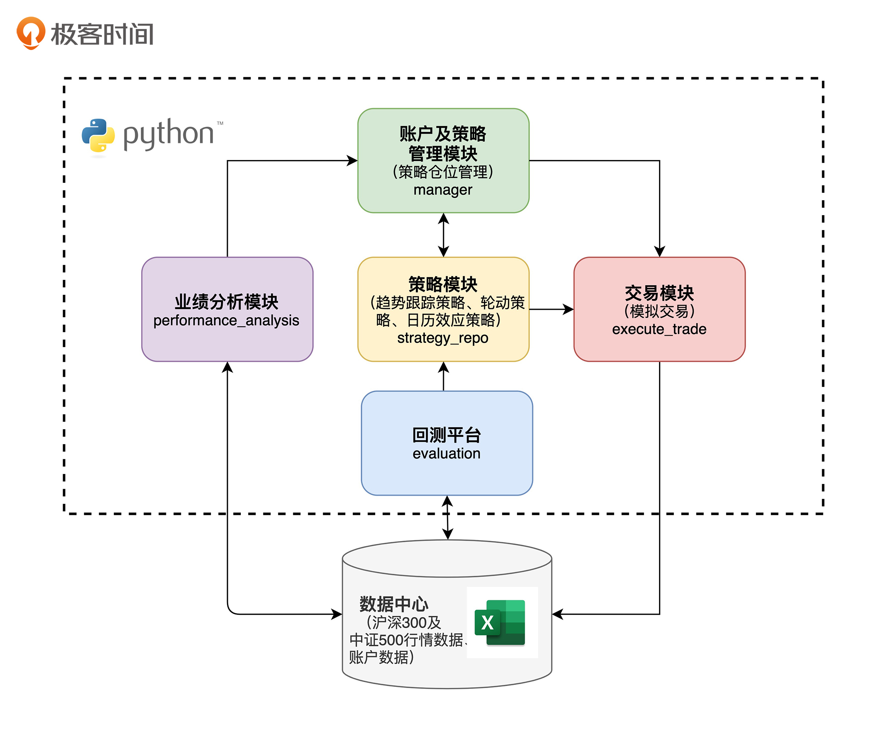
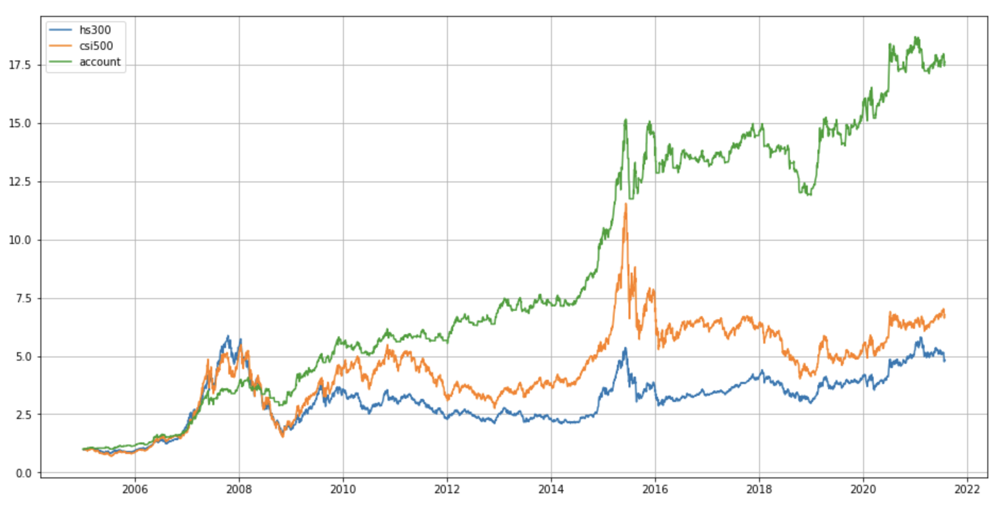
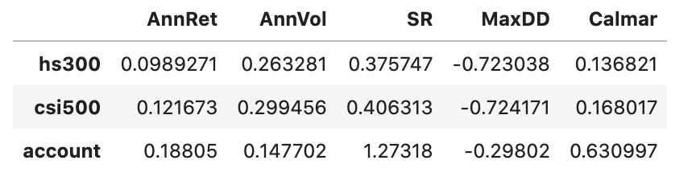
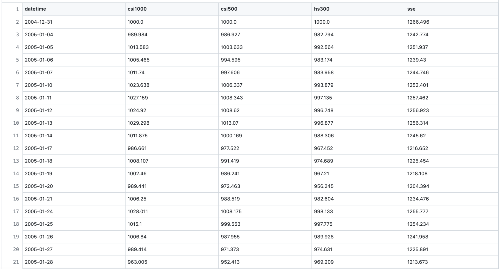
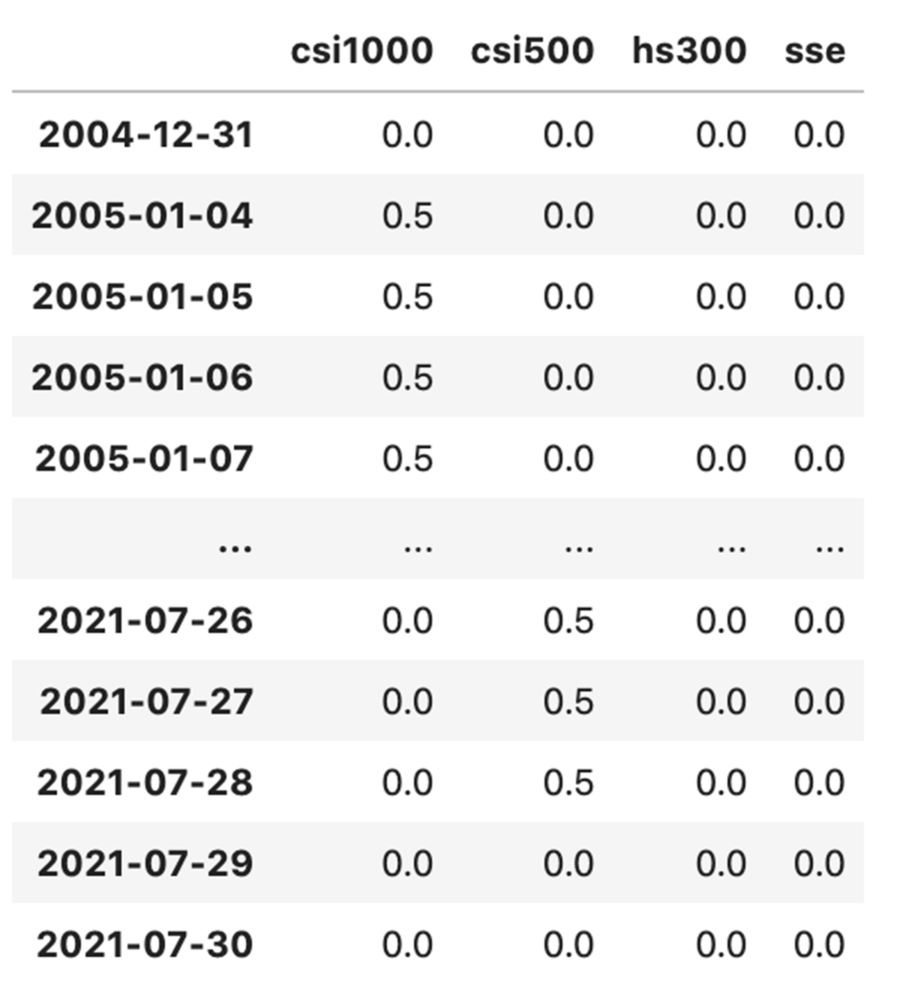

- 00 开篇词 为什么说程序员最适合学财富管理？.md.html
- 01 财富框架：建立属于你自己的财富双塔.md.html
- 02 个人发展：你自己的发展才是最大的财富源泉.md.html
- 03 理财金字塔：如何建立稳固的投资理财结构？.md.html
- 04 实战知识：有哪些收益稳健的经典资产配置组合？.md.html
- 05 支点投资法：主动投资是讲逻辑的！.md.html
- 06 不当韭菜：在财富管理的过程中摆正心态，知己知彼.md.html
- 07 职业方向：如何选择一个有前景的职业方向？.md.html
- 08 职业规划：大公司VS小公司，怎样选择更有前途？.md.html
- 09 期权股权：如何正确处理公司的期权、股权？.md.html
- 10 跳槽涨薪：如何规划一条合理的职业道路？.md.html
- 11 财富拓展：35岁失业？程序员如何拓宽财富渠道？.md.html
- 12 房产投资：如何做出理性的买房决策？.md.html
- 13 实战知识：让我们编程计算下怎么还房贷最合适.md.html
- 14 基金投资：如何让专业人士帮你赚钱？.md.html
- 15 实战知识：如何选出一只优质的基金？.md.html
- 16 股票投资：最适合散户的股票投资方法是什么？.md.html
- 17 投资闭环：如何成为越来越专业的投资者？.md.html
- 18 技术优势：程序员如何用技术超越其他投资者？.md.html
- 19 量化投资：典型的量化投资系统都包含哪些模块？.md.html
- 20 价值投资：永远不过时的中长期投资策略.md.html
- 21 趋势跟踪：怎样跟着趋势一起赚钱？.md.html
- 22 轮动策略：如何踩准市场变换的节奏？.md.html
- 23 对冲思想：这个世界上有稳赚不赔的生意吗？.md.html
- 24 多因子模型：整合不同策略，形成合力的顶层框架.md.html
- 25 机器学习：我们能用机器学习来建立投资模型吗？.md.html
- 26 量化实战：从0到1搭建起一套简单的量化投资系统（上）.md.html
- 27 量化实战：从0到1搭建起一套简单的量化投资系统（下）.md.html
- 番外一 王喆对话李腾：程序员对基金经理的灵魂十问（上）.md.html
- 番外三 有哪些能够持续学习的参考资料和相关网站？.md.html
- 番外二 王喆对话李腾：程序员对基金经理的灵魂十问（下）.md.html
- 番外四 知识总结：这门课的全部思维导图.md.html
- 答疑课堂（一） 财富框架篇、个人发展篇思考题集锦.md.html
- 答疑课堂（二） 投资实战篇、投资进阶篇思考题集锦.md.html
- 结束语 知行合一：财富管理是一生的事情.md.html
- 捐赠
26 量化实战：从0到1搭建起一套简单的量化投资系统（上）
你好，我是王喆。
在“投资进阶篇”这个模块里，我们已经学习了价值投资、趋势跟踪等6种投资策略。到了最后两讲，就是我们在实战中把这些策略融会贯通的时候了。我会带你应用最近学习的投资策略，搭建起一个简单的量化投资系统。
认真学习了前面课程的同学看到这里，应该会会心一笑：这一讲又到了发挥我们程序员技术优势的时候了。我们会在 19讲 介绍的量化投资框架基础上，搭建出一个包含了管理模块、策略模块、回测平台、数据中心、业绩分析模块和模拟交易模块在内的一整套量化投资系统。
当然，跟专业的系统比起来，它还稍显稚嫩，但也可以做到“麻雀虽小，五脏俱全”。我们这两节实战课，不是为了构建一个大而全的系统，而是要帮助有志于此的程序员同学迈上更高的台阶。学完这两讲，你可以熟悉量化投资系统的框架，掌握关键模块的基本原理，并以此为出发点，按照你自己的投资思想完善更多的细节。
温故知新：量化投资项目框架图
首先，来和我一起回顾下量化投资系统的框架吧。下面的图1是我们在 19讲 介绍过的典型量化投资系统的框架，它包括6个主要的模块。
其中“管理模块”是整个系统的管理者，负责调度所有的模块执行相应的任务；“策略模块”用来实现并执行不同的投资策略；“交易模块”执行具体的交易操作；“回测平台”类似于机器学习中的离线测试平台，用来试验各种新策略；“业绩分析模块”用来评判各个策略的盈亏情况和各个环节的运行情况；“数据中心”用来存储整个系统的所有基础数据。

在接下来要讲的实战项目中，我们将利用之前讲解过的日历策略，以及二八轮动策略的满仓版本和可空仓版本，构建针对沪深300、中证500以及中证1000三个指数的量化投资系统。这个系统的具体技术框图如图2所示：

在具体的实现中，我们将用Python实现所有的逻辑。为了方便你获取数据，我们用Excel作为数据中心，保存所有的行情和账户数据。整个项目的代码和数据，我已经上传到了我们的开源项目中。为了方便你熟悉项目中的细节，我建议你先把项目clone下来，然后安装Jupyter notebook，在Jupyter中边测试代码，边听我讲解。
先睹为快：来看下我们的成果
在开始讲细节之前，我想先给你看看构建这个量化系统能够得到的成果，让你有一个明确的目标。
你可以把我们的整个量化投资系统看成一只基金，我们就叫它“量化一号”吧。那么，我和李腾就是“量化一号”的“基金经理”，通过多策略之间的量化操作帮你管钱。那这时你就要问了：这只“量化一号”基金的收益率和风险特性怎么样呢？我们来看一下它跟沪深300、中证500这些经典指数的对比情况：


从图中的对比结果来看，量化一号的表现还是非常优异的，年化收益达到了18.8%，大幅超过了沪深300的9.9%和中证500的12.2%，而且最大回撤仅有29.8%，也明显好于两个指数70%以上的最大回撤。那接下来，就跟着我一步步操作，了解量化一号的实现细节吧。
数据中心：熟悉我们的数据
首先，我们来看一下数据中心。相关的数据你可以从GitHub项目中的basic_data地址直接下载。这个行情数据分别保存了沪深300、中证500、中证1000、上证综指近20年来的日级数据。下图展示了行情数据的具体格式：

你可以看到，这个数据格式非常简单直观，按天记录了四个指数的净值数据。我们后面的量化策略也会完全基于这四个指数的行情数据进行构建。
在量化系统的具体实现中，我们将使用get_hist_data函数对行情数据进行读取。这个函数会根据你输入的指数代码列表和截止日期，从basic_data.csv中读取相应的数据，以pandas dataframe的形式返回，供其他模块使用，具体的实现请参照下面的代码。
# 数据接口
def get_hist_data(index_ids=None, end_date=None):
"""
读取指数历史数据到指定截止日
Input:
index_ids: list of str, 指数代码列表, like ['hs300', 'csi500']
end_date: datetime.date, 截止日期
Output:
data: df(date*, index1, index2, ...), 多个指数的历史收盘价序列
"""
# 从csv文件获取指数价格数据
data = pd.read_csv('basic_data.csv').set_index('datetime')
data.index = [datestr2dtdate(e) for e in data.index]
print('基础数据起止日期：%s，%s' % (data.index[0],data.index[-1]))
if index_ids is not None:
data = data.loc[:,index_ids]
if end_date is not None:
data = data.loc[:end_date,:]
return data
策略模块：探索策略实现的细节
我要讲的第二个模块是策略模块。我们将在系统中实现三个策略，分别是我们在18讲介绍的日历策略，以及在22讲介绍的二八轮动策略的满仓版本和可空仓版本。如果你觉得自己还不太熟悉这些策略的原理，可以先回到相应的那一讲复习下。
这里，我以二八轮动的可空仓版本为例，来讲解一下策略实现的细节。
我们首先需要明确的，是rotation_stgy1这个二八轮动策略函数的输入输出。输入有四个参数，分别是我们在上一步准备好的历史行情数据data，策略开始的起始时间start_date和结束时间end_date，以及策略中需要的参数params。在这个策略中，通过params传入策略函数中的参数是N，它代表了我们在进行二八轮动时，需要查看过去多少天的历史行情数据。
# 轮动策略（可空仓版）
def rotation_stgy1(data, start_date, end_date, params):
"""
开盘前调用，返回目标组合权重
Input:
data: df(date*, index1, index2, ...), basic data
start_date, end_date: 'yyyy-mm-dd' or datetime.date
params: dict, format {'index_list':['N':20}
Output:
target_wgt: df(trade_date*, index1, index2, ...) 目标权重
"""
if type(start_date) is str:
start_date = datestr2dtdate(start_date)
if type(end_date) is str:
end_date = datestr2dtdate(end_date)
N = params['N']
start_date0 = start_date - datetime.timedelta(N)*2
dates0 = get_trading_dates(start_date0, end_date)
data0 = data.reindex(index=dates0)
N_day_ret = data0.shift(1) / data0.shift(N+1) - 1 # 截止昨收的最近N个交易日涨幅
target_wgt = pd.DataFrame(0, index=data0.index, columns=data0.columns)
for i in range(1,len(target_wgt)):
t = target_wgt.index[i]
t0 = target_wgt.index[i-1]
if N_day_ret.loc[t0,'hs300'] >= N_day_ret.loc[t0,'csi500'] and N_day_ret.loc[t0,'hs300']>0:
target_wgt.loc[t,'hs300'] = 1
elif N_day_ret.loc[t0,'hs300'] < N_day_ret.loc[t0,'csi500'] and N_day_ret.loc[t0,'csi500']>0:
target_wgt.loc[t,'csi500'] = 1
target_wgt = target_wgt.loc[start_date:end_date].fillna(0)
return target_wgt
那么上面的代码中，策略函数的返回值target_wgt是什么呢？如下面的图5所示，它其实是一个存储了策略相关各标的仓位的dataframe。比如图片中的2021年7月28号这一天，只有中证500指数的仓位是0.5，这就意味着在那天我们应该把资金的50%配置在中证500指数上，而空仓其他指数。

清楚了输入和输出，下一步我们要搞清楚的就是实现策略的核心代码。
在上面的代码中，我们要重点看的是第26行和28行的两个条件判断表达式。其中，t0是上一个交易日的时间标识，N_day_ret是最近N个交易日的区间涨跌幅，所以第一个表达式的含义就是：最近N个交易日区间上，沪深300的涨跌幅高于中证500的涨跌幅，并且沪深300的涨跌幅为正值。此时，我们就应该满仓沪深300。
相应的，第二个表达式的含义就是：最近N个交易日区间上，中证500的涨跌幅高于沪深300的涨跌幅，并且中证500的涨跌幅为正值。此时，我们就满仓中证500。对于其他情形，则一律空仓，也就是既不持有中证500，也不持有沪深300。所以直观来说，就是要看最近N个交易日的涨跌幅，哪边高投哪边，但如果高的那边也是负收益，我们就空仓。
到这里，我就讲清楚了二八轮动可空仓策略的核心逻辑。对于其他两个策略，你也可以用类似的方式，去代码中弄清楚它们的细节。
回测平台：找到策略的最优参数
为了确定各个策略的参数，比如二八轮动中的参数N，我们还需要构建一个回测平台，通过不断的回测来找到参数的最佳值。
下面的代码就展示了回测平台的主要逻辑，我已经在关键的地方添加了注释，建议你先读一遍注释和代码，再跟我一起梳理下关键的逻辑。
# 设置回测参数
start_date = datetime.date(2004,12,31) # 回测起始日期
end_date = datetime.date(2021,7,31) # 回测截止日期
# 读取基础数据
data = get_hist_data(end_date=end_date)
# 调用策略模块生成目标组合权重
target_wgt1 = calendar_stgy(data, start_date, end_date, params={'index_id':'hs300', 't1':1, 't2':5})
target_wgt2 = calendar_stgy(data, start_date, end_date, params={'index_id':'csi1000', 't1':1, 't2':5})
target_wgt3 = rotation_stgy(data, start_date, end_date, params={'N':20})
target_wgt4 = rotation_stgy1(data, start_date, end_date, params={'N':20})
target_wgt = 0*target_wgt1 + 0.5*target_wgt2 + 0*target_wgt3 + 0.5*target_wgt4 # 多策略目标组合整合
# 产生每日持仓权重
hold_wgt = target_wgt # 假设每天都可以准确地执行交易计划
# 计算组合业绩
asset_ret = data.pct_change().loc[start_date:end_date]
res = (1+asset_ret).cumprod()
res['account'] = (1+(hold_wgt.shift(1) * asset_ret).sum(axis=1)).cumprod()
# 展示净值曲线图和业绩指标表
res.loc[:,['hs300','csi500','account']].plot(figsize=(16,8), grid=True)
cal_period_perf_indicator(res.loc[:,['hs300','csi500','account']])
在回测过程中，我们首先要做的当然是准备数据。这里，我们利用get_hist_data函数准备好了起止时间区间内的历史数据。在真实的回测过程中，你也可以根据特定策略来选择起止时间，比如对于一些时效性强的策略，就不太适宜使用过长的历史数据。
回测的第二步是调用不同的策略函数，来生成不同策略的历史仓位记录。比如这里我调用了两个日历策略（calendar_stgy）和两个轮动策略（rotation_stgy和rotation_stgy1），生成了它们的历史仓位记录。回测平台是我们专门用于策略调参的地方。你可以输入不同的策略参数，来生成大量的策略持仓记录，然后通过后续的业绩分析模块来进行业绩对比，最终确定最优的策略参数。
第三步是针对组合策略进行操作。如果你想开发的不是单一的策略，而是由几个策略混合起来的组合策略，那么就还需要确定不同策略之间的权重占比。比如程序中的最终执行仓位target_wgt，就是由50%的日历策略仓位（target_wgt2）和50%的可空仓轮动策略仓位（target_wgt4）混合而成的。在真实策略的回测过程中，这里的权重也是需要通过大量的回测和业绩对比来决定的。
第四步是进行业绩分析并显示结果。这里，我们根据上面计算好的策略历史仓位和数据中心提供的历史行情数据，就可以计算出各策略的净值数据和业绩指标，然后调用Python的Matplotlib，把曲线画出来就行了。至于分析业绩的详细过程，我会在下一讲介绍业绩分析模块的逻辑时讲解。
小结
今天我们就先学到这里。这一讲，我讲解了量化系统的三个模块，会在下一讲继续进行量化投资系统中管理模块、业绩分析模块和模拟交易模块的讲解。在这里，我总结了今天这一讲的几个要点，供你再温习一遍：
- 我们要实现的量化投资系统包含了管理模块、策略模块、回测平台、数据中心、业绩分析和模拟交易六大模块。
- 我们的系统会利用日历策略，以及二八轮动策略的满仓版本和可空仓版本，针对沪深300指数、中证500指数和中证1000指数构建量化策略。
- 通过对16年数据的回测，可以看到，我们构建的“量化一号”实现了18.8%的年化收益率和29.8%的最大回撤，和中证500、沪深300的原始指数相比，均有较大改善。
- 今天我重点讲解的是数据中心、策略模块、回测平台这三个模块的实现细节，希望你能够对照源码再过一遍，加深理解。
下一讲，我们将继续进行量化实战项目的讲解，期待和你一起完成一个简单但功能完备的量化投资系统。
思考题
你能通过修改代码，验证二八轮动策略在不同参数下的效果吗？比如，可空仓版本的二八轮动策略，在N=10，N=20，N=30时的年化收益分别是多少？
欢迎你在留言区与我交流讨论，我们下一讲见。
© 2019 - 2023 Liangliang Lee. Powered by gin and hexo-theme-book.